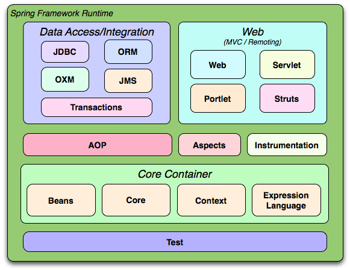

1. 스프링 프레임워크¶
허광남 씨의 스프링 학습자료 링크 입니다. 슬라이드 쉐어 입니다.
의존성 주입(Dependency injection)과 객체 관리를 위한 컨테이너(Spring IoC Container)를 제공하며 엔터프라이즈에서 필요한 다양한 모듈을 포함하는 프레임워크이다..
1.1. 작업환경 및 과정¶
- STS(Spring Tool Suit 사용) -> New -> Spring Project (Spring MVC) -> 프로젝트 생성
- https://cloud.digitalocean.com/ 서버 호스팅 -> Droplet 생성 (Ubuntu)
- STS -> Remote System Explorer(Perspective) 전환 -> Ubuntu 호스트 접속 -> 스프링 전송
- 젠킨스 실행 (java -jar jenkins.war) -> github plugin 설치
- 젠킨스 -> sftp 설치
- 젠킨스 -> jenkins 관리 -> 시스템 설정 -> maven 및 JDK 환경 설정 -> ssh 서버 설정
- 젠킨스 -> 프로젝트 생성 -> git 및 git url 추가 -> pom.xml 위치 설정 (빌드를 실행하면 clone 받는다. 이떄 pom.xml 위치 확인 후 진행)
- 젠킨스 -> 프로젝트 -> ssh 서버 선택 -> 업로드 할 파일 입력 (**/*.war) -> 빌드 후 실행할 명령어 추가 (*.war를 webapps로 복사하는 명령 등)
서버에서 빌드 및 톰캣 실행할 경우 mvn package tomcat7:run 를 사용하면 편하다.
1.1.1. 스프링의 이해¶
스프링 프레임워크의 기본 컨셉은 DI, AOP, Portable Service Abstract라고 한다. 스프링빈은 스프링 컨테이너가 생성, 사용등을 제어해주는 객체이다. 어플리케이션 컨텍스트는 스프링 컨테이너에서 빈을 생성하는 빈 팩토리이다. DaoFactory라는 객체가 있다면 @Configuration과 @Bean이라는 애노테이션을 사용하여 어플리케이션 컨텍스트가 사용할 정보라는 것을 표시한다.
- Spring JDBC - 스프링에서 제공해주는 JDBC
- ORM - 비지니스가 변하면 데이터도 변할 필요가 있어서 생긴 모듈(하이버네이트도 있다)
- JMS - 자바 서버끼리 데이터를 주고 받을 수 있는 표준
- OXM - Object와 XML을 연관 시켜주는 모듈
- Beans - POJO를 관리해줌
- Core - Bean을 관리해줌, IOC 컨테이너
- Context - Application Context, Web Application Context
- Expression Language - 표준 자바에 확장된 문법
- Instrumentation - 클래스 파일을 쪼개고 다시 조립할 수 있는 기술, Point cut, Advise 시 필요 함
1.2. 어플리케이션 컨텍스트 동작방식¶
왜 어플리케이션 컨텍스트 가 빈 팩토리보다 뛰어난가? DaoFactory는 객체를 생성하고 DB 커넥션 코드가 포함된 클래스임에 반해 어플리케이션 컨텍스트는 IoC를 적용해서 관리할 모든 오브젝트에 대한 생성과 관계설정을 담당한다. 결론적으로 어플리케이션 컨텍스트를 사용하면 DaoFactory를 알 필요 없이 이는 일관된 방식으로 빈 객체를 사용할 수 있다. 또한 다양한 검색기능을 제공해주고 종합적인 IoC 기능을 제공해 준다.
1.3. 용어¶
- 빈즈(Beans): 스프링 애플리케이션에서 관리되는 객체를 부르는 말이다.
- POJO(Plain Old Java Object): 상속 관계가 없는 프레임 워크나 자바 모델을 따르지 않는 클래스의 객체를 뜻한다. 프레임워크에 무겁게 종속된 객체에 반발하여 만든 용어라고 한다. 대표적으로 스프링 프레임워크는 POJO방식에 속한다. 스프링은 Servlet을 상속하지 않고 구현할 수 있다. 코드가 간결해지는 장점이 있다. POJO 위키
- Portable Service Abstract(PSA): JBOSS, Web Logic, Tomcat, Jeus 와 같은 모든 서버에서 다 동작 시킬 수 있다.
- 빈 팩토리: IoC를 담당하는 핵심 컨테이너를 가르킨다.
- 어플리케이션 컨텍스트: 스프링에서 IoC를 담당하는 핵심 컨테이너로 빈 팩토리를 상속하여 구현하였다.
- 설정정보/설정 메타정보: 어플리케이션 컨텍스트가 IoC를 적용하기 위해 사용하는 메타정보이다. 애노테이션이 사용된다.
- 컨테이너 또는 IoC 컨테이너: 스프링, 스프링 컨테이너, 어플리케이션 컨테이나, 빈 팩토리 등 의미는 같으나 다양한 용어로 불린다.
1.4. 어플리케이션 컨텍스트와 싱글톤 객체¶
서버 어플리케이션에서 매번 클라이언트 요청마다 새로운 객체를 만들어 데이터를 엑세스한다면 자원 낭비가 심할 것이다. 따라서 어플리케이션 컨테스트는 빈을 생성할때 싱글톤 객체를 반환한다. 하지만 서버 어플리케이션에서 싱글톤 패턴을 사용한 객체는 여러개 생길 수 있다. 예를들어 분산된 JVM의 경우 그럴 수 있다. 또한 싱글톤 객체는 private로서 상속이 불가능하다. 따라서 스프링에선 싱글톤 레지스트리 를 제공한다. 일반적인 클래스를 싱글톤으로 사용할 수 있게 하는 스프링의 중요한 기능이다.
싱글톤 방식으로 사용될 클래스를 설계할때 멀티스레드 환경에서 동작할 것을 고려하여 설계하여야 한다. 하지만 싱글톤을 사용할 수 있다고 해서 컨테이너가 삭제하기 전까지 사용할 수 있는 싱글톤 스코프만 존재하는것은 아니다. 요청 스코프, 세션 스코프, 프로토타입 스코프 등도 사용할 수 있다.
1.5. 의존관계 주입(DI)¶
컨테이너에서 객체의 레퍼런스를 전달받고 그 레퍼런스와 다른 객체들 사이의 의존관계를 만들어 주는 것 이것을 의존관계 주입이라고 한다. 이때 의존한다는 뜻은 예를들어 2개의 클래스가 A ---> B 와 같은 관계를 가지고 있을때 A클래스는 B클래스에 의존하고 있고 B클래스는 A클래스에 의존하고 있지 않다라고 한다.
2개의 클래스가 서로 의존관계를 생성할때 인터페이스에 의존하게 된다면 인터페이스를 구현하는 실제 클래스와의 의존관계가 느슨해져서 다른 한쪽의 변화로 부터 자유롭다. 런타임에 실제 클래스가 인스턴스화 된다면 그 객체를 의존 오브젝트 라고 한다.
의존관계를 주입을 하는 역할을 가진 DaoFactory는 DI 컨테이너가 된다. DaoFactory가 UserDao라는 DAO를 만들때 DB연결 객체를 주입하게된다.
애노테이션이 아닌 XML 설정파일을 활용하여 의존관계 주입을 할 수 있다.
1.5.1. 테스트 컨텍스트 프레임워크¶
일반적으로 단위 테스트는 프로그램에서 작은 기능이 정상적으로 동작하는지 확인하는 테스트이다. 이런 단위테스트는 좀더 긴 테스트를 진행하기전에 돌려봄으로써 테스트를 더 효율적으로 만들어 준다. JUNIT은 스프링 테스트를 배우기 위해 알고 있어야 한다. DAO를 테스트하고 싶을 때에는 @Autowired로 객체를 주입받아 테스트를 진행한다. 쿼리 테스트를 위해서는 롤백 테스트 또는 사본 디비를 사용하면 된다. @ContextConfiguration 과 @RunWith(SpringJUnitClassRunner.class) 를 테스트 클래스 위에 입력하고 테스트 메서드를 쓰면 테스트가 동작한다.
1.6. 쿼리 테스트¶
@Transactional 어노테이션을 사용하면 강제 롤백 옵션이 포함되어 있다. setRollbackOnly()가 호출되는것과 동일하다고 한다.
1.6.1. Maven¶
소스 의존성 및 쉬운 레파지토리를 다운받게 해주며 컴파일과 배포 자동화를 지원해준다.
메이븐의 라이프 사이클은 프로그램을 컴파일하고 배포하기 까지의 단계들을 뜻한다. 라이프 사이클은 여러개의 Phase로 이루어져 있고 각 Phase는 메이븐이 무슨일을 할지 목표만 가르키고 있다. 이 목표를 Goal이라고 한다. Goal은 메이븐에서 작업 명령의 단위이다.
1.7. Goal¶
mvn compile: 컴파일 한다. mvn package: 컴파일 후 jar 또는 war 패키지를 생성한다. mvn install: jar또는 war를 로컬 저장소에 복사한다. mvn package tomcat:run -: tomcat7-maven-plugin을 빌드 플러그인으로 포함하고 있다면 WAS 까지 자동으로 실행한다.
톰캣 바로 실행:
<plugin>
<groupId>org.apache.tomcat.maven</groupId>
<artifactId>tomcat7-maven-plugin</artifactId>
<!-- or if you want to use tomcat 6.x <artifactId>tomcat6-maven-plugin</artifactId> -->
<version>2.1</version>
<configuration>
<!-- http port -->
<port>8080</port>
<!-- application path always starts with / -->
<path>/</path>
</configuration>
</plugin>